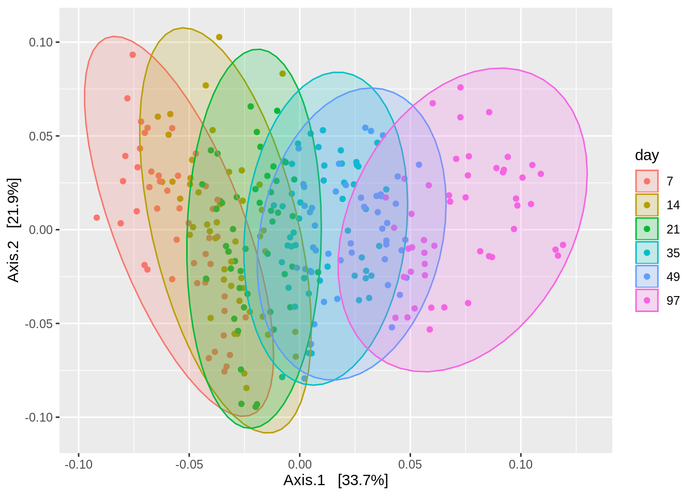
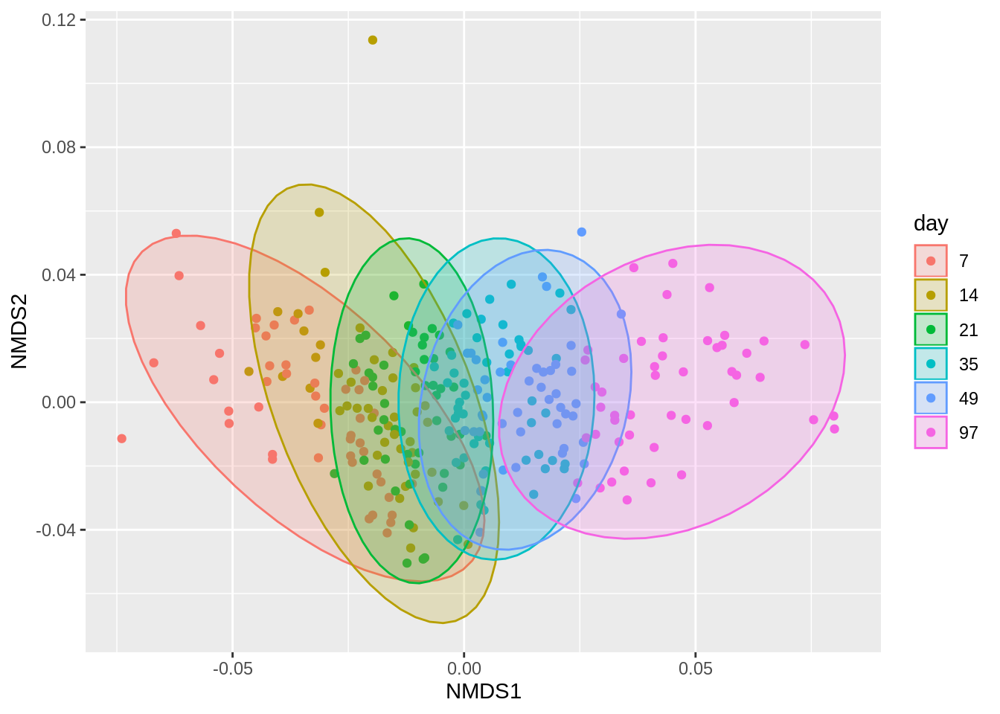
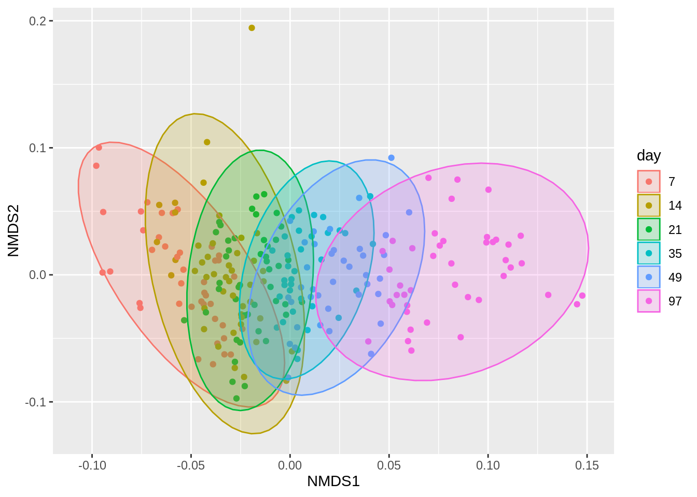
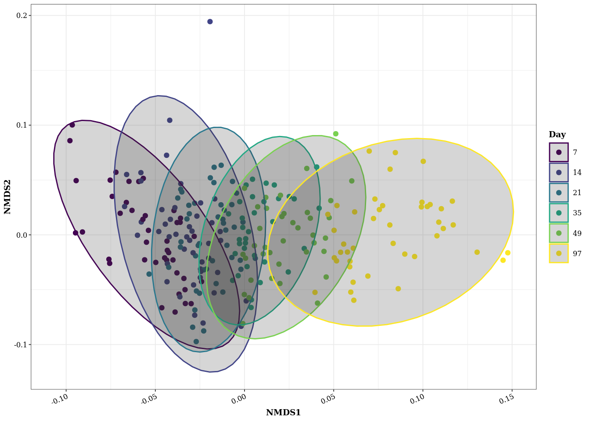
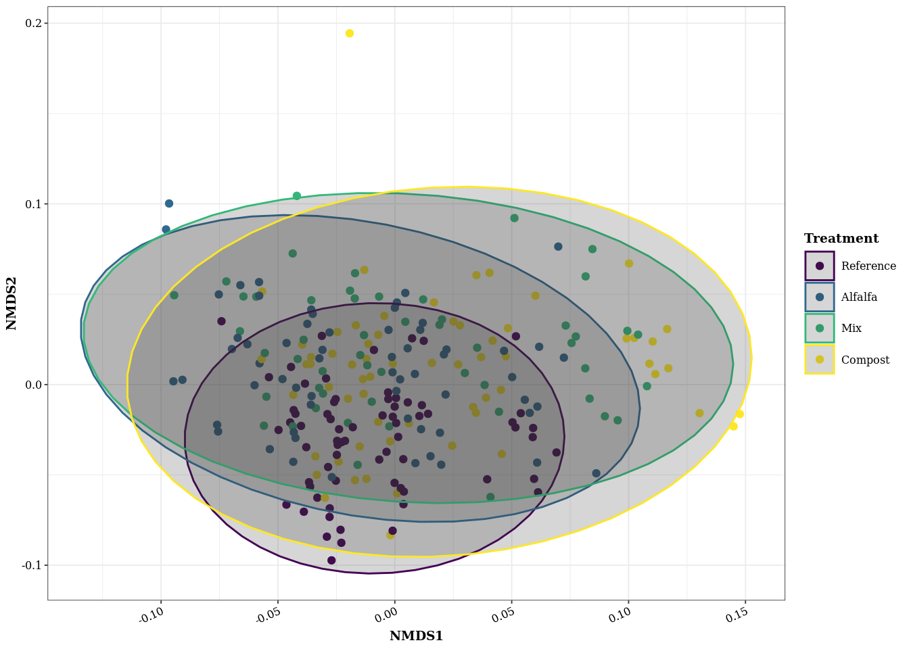
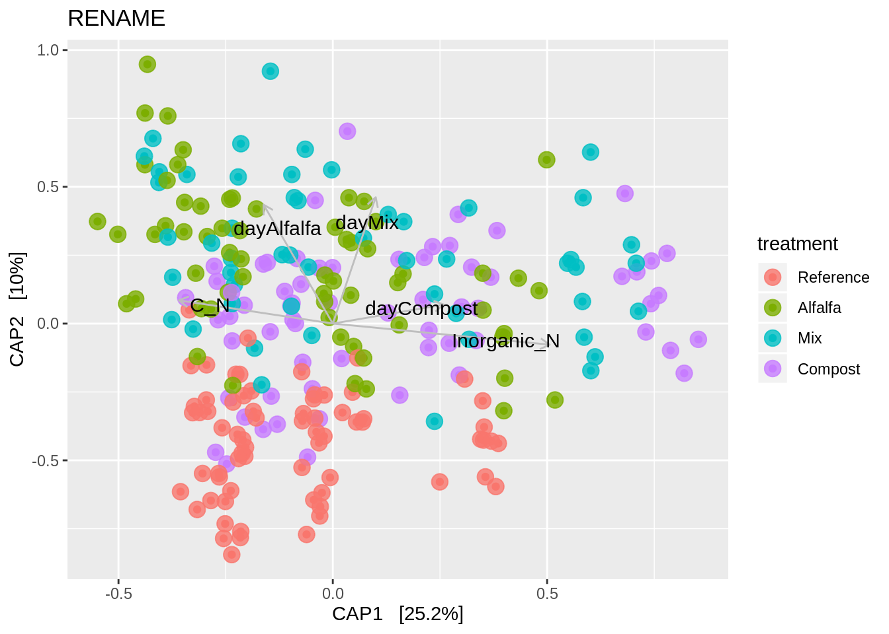
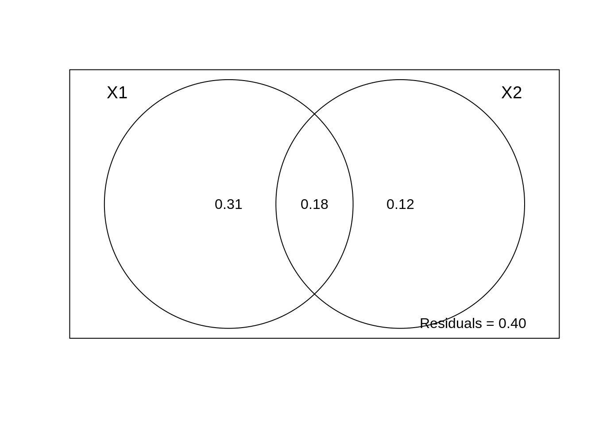

library(phyloseq)
library(vegan)## Loading required package: permute## Loading required package: lattice## This is vegan 2.5-6library(tidyverse)## ── Attaching packages ───────────────────── tidyverse 1.3.0 ──## ✓ ggplot2 3.2.1 ✓ purrr 0.3.3
## ✓ tibble 2.1.3 ✓ dplyr 0.8.3
## ✓ tidyr 1.0.0 ✓ stringr 1.4.0
## ✓ readr 1.3.1 ✓ forcats 0.4.0## ── Conflicts ──────────────────────── tidyverse_conflicts() ──
## x dplyr::filter() masks stats::filter()
## x dplyr::lag() masks stats::lag()library(xtable)
library(viridis)## Loading required package: viridisLitelibrary(kableExtra)##
## Attaching package: 'kableExtra'## The following object is masked from 'package:dplyr':
##
## group_rowsinc.raw.physeq <- readRDS("../data/incubation_physeq_Aug18.RDS")
inc.physeq <- subset_samples(inc.raw.physeq, day %in% c("7",
"14",
"21",
"35",
"49",
"97"))
#Rename treatments to more informative titles
data <- data.frame(sample_data(inc.physeq)) %>%
mutate(treatment = recode(treatment,
'Control' = 'Reference',
'CompAlfa' = 'Mix')) %>%
mutate(C_N = C_flash / N_flash, Inorganic_N = NH3 + NO3) %>%
mutate(TreatmentAndDay = paste(treatment, day))
data$treatment <- relevel(data$treatment, ref = "Reference")
data$day <- as.factor(data$day)
rownames(data) <- data$i_id
sample_data(inc.physeq) <- data
sample_data(inc.physeq)$day <- as.factor(sample_data(inc.physeq)$day)
inc.physeq## phyloseq-class experiment-level object
## otu_table() OTU Table: [ 43630 taxa and 288 samples ]
## sample_data() Sample Data: [ 288 samples by 16 sample variables ]
## tax_table() Taxonomy Table: [ 43630 taxa by 6 taxonomic ranks ]tree <- read_tree("../data/tree.nwk")
# Add the tree file to the phyloseq object
inc_phy <- merge_phyloseq(inc.physeq, tree)
inc <- inc_phy %>%
filter_taxa(function(x) sum(x) >= 2, T)
inc## phyloseq-class experiment-level object
## otu_table() OTU Table: [ 25743 taxa and 288 samples ]
## sample_data() Sample Data: [ 288 samples by 16 sample variables ]
## tax_table() Taxonomy Table: [ 25743 taxa by 6 taxonomic ranks ]
## phy_tree() Phylogenetic Tree: [ 25743 tips and 25741 internal nodes ]#rarecurve(t(otu_table(inc)))PCoA <- ordinate(inc, "PCoA", "wunifrac")## Warning in UniFrac(physeq, weighted = TRUE, ...): Randomly assigning root as --
## Otu11155 -- in the phylogenetic tree in the data you provided.plotpcoa <- plot_ordination(inc, PCoA, color = "day") + stat_ellipse(geom = "polygon", type = "norm", alpha = 0.2, aes(fill = day))
plotpcoa
NMDS <- ordinate(inc, "NMDS", "wunifrac")## Warning in UniFrac(physeq, weighted = TRUE, ...): Randomly assigning root as --
## Otu08485 -- in the phylogenetic tree in the data you provided.## Run 0 stress 0.1190043
## Run 1 stress 0.1190047
## ... Procrustes: rmse 6.430391e-05 max resid 0.00105328
## ... Similar to previous best
## Run 2 stress 0.1264647
## Run 3 stress 0.1190044
## ... Procrustes: rmse 4.452128e-05 max resid 0.0004885024
## ... Similar to previous best
## Run 4 stress 0.1190043
## ... New best solution
## ... Procrustes: rmse 3.585581e-05 max resid 0.0004624971
## ... Similar to previous best
## Run 5 stress 0.1190047
## ... Procrustes: rmse 8.198015e-05 max resid 0.001353034
## ... Similar to previous best
## Run 6 stress 0.1264427
## Run 7 stress 0.1264415
## Run 8 stress 0.1190043
## ... Procrustes: rmse 2.180446e-05 max resid 0.0003474876
## ... Similar to previous best
## Run 9 stress 0.1190044
## ... Procrustes: rmse 3.806648e-05 max resid 0.0005877427
## ... Similar to previous best
## Run 10 stress 0.1190043
## ... New best solution
## ... Procrustes: rmse 1.448558e-05 max resid 0.0001564497
## ... Similar to previous best
## Run 11 stress 0.1190043
## ... New best solution
## ... Procrustes: rmse 7.477894e-06 max resid 8.656938e-05
## ... Similar to previous best
## Run 12 stress 0.1264395
## Run 13 stress 0.1264631
## Run 14 stress 0.1264387
## Run 15 stress 0.1190048
## ... Procrustes: rmse 9.076295e-05 max resid 0.001495434
## ... Similar to previous best
## Run 16 stress 0.1190043
## ... Procrustes: rmse 2.841486e-05 max resid 0.0004618702
## ... Similar to previous best
## Run 17 stress 0.1190043
## ... Procrustes: rmse 3.269789e-05 max resid 0.0004547394
## ... Similar to previous best
## Run 18 stress 0.1264366
## Run 19 stress 0.1264362
## Run 20 stress 0.1264375
## *** Solution reachedplotNMDS <- plot_ordination(inc, NMDS, color = "day") + stat_ellipse(geom = "polygon", type = "norm", alpha = 0.2, aes(fill = day))
plotNMDS
rare <- inc %>%
rarefy_even_depth(sample.size = 6000, rngseed = 432432)## `set.seed(432432)` was used to initialize repeatable random subsampling.## Please record this for your records so others can reproduce.## Try `set.seed(432432); .Random.seed` for the full vector## ...## 41 samples removedbecause they contained fewer reads than `sample.size`.## Up to first five removed samples are:## i063i068i087i092i111## ...## 5569OTUs were removed because they are no longer
## present in any sample after random subsampling## ...sample_sums(rare)## i049 i050 i051 i052 i053 i054 i055 i056 i057 i058 i059 i060 i064 i065 i066 i067
## 6000 6000 6000 6000 6000 6000 6000 6000 6000 6000 6000 6000 6000 6000 6000 6000
## i069 i070 i071 i072 i075 i076 i077 i078 i079 i080 i081 i082 i083 i084 i088 i089
## 6000 6000 6000 6000 6000 6000 6000 6000 6000 6000 6000 6000 6000 6000 6000 6000
## i090 i091 i093 i094 i095 i096 i099 i100 i101 i102 i103 i104 i105 i106 i107 i108
## 6000 6000 6000 6000 6000 6000 6000 6000 6000 6000 6000 6000 6000 6000 6000 6000
## i109 i110 i112 i113 i114 i115 i116 i117 i118 i119 i120 i121 i122 i123 i124 i125
## 6000 6000 6000 6000 6000 6000 6000 6000 6000 6000 6000 6000 6000 6000 6000 6000
## i126 i127 i128 i129 i130 i131 i132 i135 i136 i137 i138 i139 i140 i141 i142 i143
## 6000 6000 6000 6000 6000 6000 6000 6000 6000 6000 6000 6000 6000 6000 6000 6000
## i144 i145 i146 i147 i148 i149 i150 i151 i152 i153 i154 i155 i156 i157 i158 i159
## 6000 6000 6000 6000 6000 6000 6000 6000 6000 6000 6000 6000 6000 6000 6000 6000
## i160 i161 i163 i164 i165 i166 i167 i168 i170 i171 i172 i173 i174 i175 i176 i177
## 6000 6000 6000 6000 6000 6000 6000 6000 6000 6000 6000 6000 6000 6000 6000 6000
## i178 i179 i180 i181 i182 i183 i184 i185 i186 i187 i189 i190 i191 i192 i193 i194
## 6000 6000 6000 6000 6000 6000 6000 6000 6000 6000 6000 6000 6000 6000 6000 6000
## i195 i197 i198 i199 i200 i201 i202 i203 i204 i205 i206 i207 i208 i209 i210 i211
## 6000 6000 6000 6000 6000 6000 6000 6000 6000 6000 6000 6000 6000 6000 6000 6000
## i212 i213 i214 i215 i216 i217 i218 i221 i222 i224 i226 i227 i228 i238 i239 i240
## 6000 6000 6000 6000 6000 6000 6000 6000 6000 6000 6000 6000 6000 6000 6000 6000
## i241 i242 i243 i244 i245 i246 i247 i248 i249 i250 i251 i252 i253 i254 i255 i256
## 6000 6000 6000 6000 6000 6000 6000 6000 6000 6000 6000 6000 6000 6000 6000 6000
## i257 i258 i260 i263 i264 i265 i266 i267 i268 i269 i271 i272 i273 i274 i275 i277
## 6000 6000 6000 6000 6000 6000 6000 6000 6000 6000 6000 6000 6000 6000 6000 6000
## i280 i281 i282 i284 i285 i286 i289 i290 i291 i292 i293 i294 i295 i296 i297 i298
## 6000 6000 6000 6000 6000 6000 6000 6000 6000 6000 6000 6000 6000 6000 6000 6000
## i301 i303 i304 i305 i307 i308 i309 i310 i311 i312 i313 i315 i316 i317 i318 i319
## 6000 6000 6000 6000 6000 6000 6000 6000 6000 6000 6000 6000 6000 6000 6000 6000
## i320 i321 i322 i323 i324 i325 i326 i327 i328 i329 i330 i331 i332 i333 i334 i335
## 6000 6000 6000 6000 6000 6000 6000 6000 6000 6000 6000 6000 6000 6000 6000 6000
## i336 i62 i73 i74 i86 i97 i98
## 6000 6000 6000 6000 6000 6000 6000rm(inc, inc_phy, inc.physeq, inc.raw.physeq, NMDS, tree)source(file = "functions.R")
NMDS <- ordinate(rare, "NMDS", "wunifrac")## Warning in UniFrac(physeq, weighted = TRUE, ...): Randomly assigning root as --
## Otu07613 -- in the phylogenetic tree in the data you provided.## Run 0 stress 0.1170172
## Run 1 stress 0.1170172
## ... New best solution
## ... Procrustes: rmse 4.230678e-05 max resid 0.0006466407
## ... Similar to previous best
## Run 2 stress 0.1170172
## ... Procrustes: rmse 1.341493e-05 max resid 0.0001744778
## ... Similar to previous best
## Run 3 stress 0.1170172
## ... New best solution
## ... Procrustes: rmse 8.093134e-06 max resid 0.0001114333
## ... Similar to previous best
## Run 4 stress 0.126016
## Run 5 stress 0.1170219
## ... Procrustes: rmse 0.0002905467 max resid 0.003634378
## ... Similar to previous best
## Run 6 stress 0.1170172
## ... Procrustes: rmse 1.183619e-05 max resid 0.0001582325
## ... Similar to previous best
## Run 7 stress 0.1170206
## ... Procrustes: rmse 0.0002605653 max resid 0.003675671
## ... Similar to previous best
## Run 8 stress 0.1170206
## ... Procrustes: rmse 0.0002595625 max resid 0.003669623
## ... Similar to previous best
## Run 9 stress 0.1170172
## ... Procrustes: rmse 2.878284e-05 max resid 0.0004300151
## ... Similar to previous best
## Run 10 stress 0.1170172
## ... Procrustes: rmse 3.350493e-05 max resid 0.0005097563
## ... Similar to previous best
## Run 11 stress 0.1170174
## ... Procrustes: rmse 5.897523e-05 max resid 0.0008976061
## ... Similar to previous best
## Run 12 stress 0.117021
## ... Procrustes: rmse 0.000267305 max resid 0.003654904
## ... Similar to previous best
## Run 13 stress 0.1170174
## ... Procrustes: rmse 4.967763e-05 max resid 0.0007476279
## ... Similar to previous best
## Run 14 stress 0.1170172
## ... Procrustes: rmse 9.499582e-06 max resid 9.715613e-05
## ... Similar to previous best
## Run 15 stress 0.1170172
## ... Procrustes: rmse 3.653993e-05 max resid 0.0005577157
## ... Similar to previous best
## Run 16 stress 0.1170207
## ... Procrustes: rmse 0.0002599512 max resid 0.003669788
## ... Similar to previous best
## Run 17 stress 0.1170207
## ... Procrustes: rmse 0.000261524 max resid 0.003664107
## ... Similar to previous best
## Run 18 stress 0.1170206
## ... Procrustes: rmse 0.0002593862 max resid 0.003677209
## ... Similar to previous best
## Run 19 stress 0.1170172
## ... Procrustes: rmse 1.752141e-05 max resid 0.0002066354
## ... Similar to previous best
## Run 20 stress 0.1260212
## *** Solution reachedplot_ordination(rare, NMDS, color = "day") + stat_ellipse(geom = "polygon", type = "norm", alpha = 0.2, aes(fill = day))
plot <- plot_ordination(rare, NMDS, color = "day") + stat_ellipse(geom = "polygon", type = "norm", alpha = 0.2, aes(color = day)) +
theme_my() +
labs(color = "Day") +
scale_color_viridis(discrete = T)
plot
ggsave("../Figures/Fig_5.png", plot = plot, device = "png", width = 90, height = 90, units = "mm", dpi = 500)
plot <- plot_ordination(rare, NMDS, color = "treatment") + stat_ellipse(geom = "polygon", type = "norm", alpha = 0.2, aes(color = treatment)) +
theme_my() +
labs(color = "Treatment") +
scale_color_viridis(discrete = T)
plot
ggsave("../Figures/Fig_S5.png", plot = plot, device = "png", width = 90, height = 90, units = "mm", dpi = 500)dist <- phyloseq::distance(rare, method = "wunifrac")## Warning in UniFrac(physeq, weighted = TRUE, ...): Randomly assigning root as --
## Otu10042 -- in the phylogenetic tree in the data you provided.day.stats <- adonis2(dist ~ treatment * day, data = data.frame(sample_data(rare)))
day.stats## Permutation test for adonis under reduced model
## Terms added sequentially (first to last)
## Permutation: free
## Number of permutations: 999
##
## adonis2(formula = dist ~ treatment * day, data = data.frame(sample_data(rare)))
## Df SumOfSqs R2 F Pr(>F)
## treatment 3 0.28248 0.15588 26.5117 0.001 ***
## day 5 0.62064 0.34247 34.9488 0.001 ***
## treatment:day 15 0.11709 0.06461 2.1977 0.001 ***
## Residual 223 0.79203 0.43704
## Total 246 1.81223 1.00000
## ---
## Signif. codes: 0 '***' 0.001 '**' 0.01 '*' 0.05 '.' 0.1 ' ' 1kable(day.stats, "html") %>%
kable_styling()| Df | SumOfSqs | R2 | F | Pr(>F) | |
|---|---|---|---|---|---|
| treatment | 3 | 0.2824839 | 0.1558762 | 26.511674 | 0.001 |
| day | 5 | 0.6206361 | 0.3424704 | 34.948763 | 0.001 |
| treatment:day | 15 | 0.1170855 | 0.0646084 | 2.197742 | 0.001 |
| Residual | 223 | 0.7920272 | 0.4370450 | NA | NA |
| Total | 246 | 1.8122328 | 1.0000000 | NA | NA |
treatment.stats <- adonis(dist ~ treatment * day, data = data.frame(sample_data(rare)))
kable(treatment.stats$aov.tab, "html") %>%
kable_styling()| Df | SumsOfSqs | MeanSqs | F.Model | R2 | Pr(>F) | |
|---|---|---|---|---|---|---|
| treatment | 3 | 0.2824839 | 0.0941613 | 26.511674 | 0.1558762 | 0.001 |
| day | 5 | 0.6206361 | 0.1241272 | 34.948763 | 0.3424704 | 0.001 |
| treatment:day | 15 | 0.1170855 | 0.0078057 | 2.197742 | 0.0646084 | 0.001 |
| Residuals | 223 | 0.7920272 | 0.0035517 | NA | 0.4370450 | NA |
| Total | 246 | 1.8122328 | NA | NA | 1.0000000 | NA |
https://www.davidzeleny.net/anadat-r/doku.php/en:rda_cca # Variable selection for constrained ordination
species <- data.frame(t(otu_table(rare)))
env <- data.frame(sample_data(rare))
env <- env %>%
select(treatment, day, pH, C_N, Inorganic_N, MBC_mg.kg_per_dry_wt_soil)# rda
#tb_rda.all <- rda(species ~ ., env)
# try dbrda
dbrda.all <- dbrda(dist ~ ., env)
#anova(tb_rda.all)
anova(dbrda.all)## Permutation test for dbrda under reduced model
## Permutation: free
## Number of permutations: 999
##
## Model: dbrda(formula = dist ~ treatment + day + pH + C_N + Inorganic_N + MBC_mg.kg_per_dry_wt_soil, data = env)
## Df SumOfSqs F Pr(>F)
## Model 12 0.95394 21.673 0.001 ***
## Residual 234 0.85829
## ---
## Signif. codes: 0 '***' 0.001 '**' 0.01 '*' 0.05 '.' 0.1 ' ' 1#adjR2.tbrda <- RsquareAdj(tb_rda.all)$adj.r.squared
adjR2.dbrda <- RsquareAdj(dbrda.all)$adj.r.squared
#tb_rda.vasc.0 <- rda(species ~ 1, data = env)
#tb_rda.vasc.all <- rda(species ~ ., data = env)
db_rda.vasc.0 <- dbrda(dist ~ 1, data = env)
db_rda.vasc.all <- dbrda(dist ~ ., data = env)
#sel.osR2 <- ordiR2step(tb_rda.vasc.0, scope = formula(tb_rda.vasc.all), R2scope = adjR2.tbrda, direction = 'forward', permutations = 999)
#sel.osR2
sel.osR2b <- ordiR2step(db_rda.vasc.0, scope = formula(db_rda.vasc.all), R2scope = adjR2.dbrda, direction = 'both', permutations = 999)## Step: R2.adj= 0
## Call: dist ~ 1
##
## R2.adjusted
## <All variables> 0.50210372
## + day 0.32903732
## + treatment 0.14545487
## + pH 0.11392852
## + Inorganic_N 0.08796664
## + MBC_mg.kg_per_dry_wt_soil 0.06679217
## + C_N 0.05575488
## <none> 0.00000000
##
## Df AIC F Pr(>F)
## + day 5 54.219 25.128 0.001 ***
## ---
## Signif. codes: 0 '***' 0.001 '**' 0.01 '*' 0.05 '.' 0.1 ' ' 1
##
## Step: R2.adj= 0.3290373
## Call: dist ~ day
##
## R2.adjusted
## <All variables> 0.5021037
## + treatment 0.4814843
## + MBC_mg.kg_per_dry_wt_soil 0.4028120
## + Inorganic_N 0.3695064
## + C_N 0.3668691
## + pH 0.3591202
## <none> 0.3290373
##
## Df AIC F Pr(>F)
## + treatment 3 -6.5377 24.619 0.001 ***
## ---
## Signif. codes: 0 '***' 0.001 '**' 0.01 '*' 0.05 '.' 0.1 ' ' 1
##
## Step: R2.adj= 0.4814843
## Call: dist ~ day + treatment
##
## R2.adjusted
## <All variables> 0.5021037
## + Inorganic_N 0.4946367
## + MBC_mg.kg_per_dry_wt_soil 0.4910780
## + C_N 0.4876437
## + pH 0.4832758
## <none> 0.4814843
##
## Df AIC F Pr(>F)
## + Inorganic_N 1 -11.924 7.1941 0.001 ***
## ---
## Signif. codes: 0 '***' 0.001 '**' 0.01 '*' 0.05 '.' 0.1 ' ' 1
##
## Step: R2.adj= 0.4946367
## Call: dist ~ day + treatment + Inorganic_N
##
## R2.adjusted
## <All variables> 0.5021037
## + C_N 0.4999293
## + MBC_mg.kg_per_dry_wt_soil 0.4963175
## + pH 0.4954533
## <none> 0.4946367
##
## Df AIC F Pr(>F)
## + C_N 1 -13.569 3.5084 0.003 **
## ---
## Signif. codes: 0 '***' 0.001 '**' 0.01 '*' 0.05 '.' 0.1 ' ' 1
##
## Step: R2.adj= 0.4999293
## Call: dist ~ day + treatment + Inorganic_N + C_N
##
## R2.adjusted
## <All variables> 0.5021037
## + MBC_mg.kg_per_dry_wt_soil 0.5016474
## + pH 0.5005060
## <none> 0.4999293
##
## Df AIC F Pr(>F)
## + MBC_mg.kg_per_dry_wt_soil 1 -13.468 1.8136 0.071 .
## ---
## Signif. codes: 0 '***' 0.001 '**' 0.01 '*' 0.05 '.' 0.1 ' ' 1sel.osR2b## Call: dbrda(formula = dist ~ day + treatment + Inorganic_N + C_N, data
## = env)
##
## Inertia Proportion Rank RealDims
## Total 1.8122 1.0000
## Constrained 0.9428 0.5203 10 10
## Unconstrained 0.8694 0.4797 236 179
## Inertia is squared Unknown distance
##
## Eigenvalues for constrained axes:
## dbRDA1 dbRDA2 dbRDA3 dbRDA4 dbRDA5 dbRDA6 dbRDA7 dbRDA8 dbRDA9 dbRDA10
## 0.5385 0.1889 0.0849 0.0610 0.0252 0.0159 0.0106 0.0074 0.0067 0.0038
##
## Eigenvalues for unconstrained axes:
## MDS1 MDS2 MDS3 MDS4 MDS5 MDS6 MDS7 MDS8
## 0.29494 0.04494 0.03696 0.03199 0.02627 0.02501 0.01975 0.01780
## (Showing 8 of 236 unconstrained eigenvalues)#sel.osR2$anova
sel.osR2b$anova## R2.adj Df AIC F Pr(>F)
## + day 0.32904 5 54.219 25.1275 0.001 ***
## + treatment 0.48148 3 -6.538 24.6185 0.001 ***
## + Inorganic_N 0.49464 1 -11.924 7.1941 0.001 ***
## + C_N 0.49993 1 -13.569 3.5084 0.003 **
## <All variables> 0.50210
## ---
## Signif. codes: 0 '***' 0.001 '**' 0.01 '*' 0.05 '.' 0.1 ' ' 1#sel.osR2_adj <- sel.osR2
sel.osR2_adjb <- sel.osR2b
#sel.osR2_adj$anova$`Pr(>F)` <- p.adjust(sel.osR2$anova$`Pr(>F)`, method = 'holm', n = ncol(env))
sel.osR2_adjb$anova$`Pr(>F)` <- p.adjust(sel.osR2b$anova$`Pr(>F)`, method = 'holm', n = ncol(env))
#sel.osR2_adj$anova
sel.osR2_adjb$anova## R2.adj Df AIC F Pr(>F)
## + day 0.32904 5 54.219 25.1275 0.006 **
## + treatment 0.48148 3 -6.538 24.6185 0.006 **
## + Inorganic_N 0.49464 1 -11.924 7.1941 0.006 **
## + C_N 0.49993 1 -13.569 3.5084 0.009 **
## <All variables> 0.50210
## ---
## Signif. codes: 0 '***' 0.001 '**' 0.01 '*' 0.05 '.' 0.1 ' ' 1rare@sam_data$day <- as.integer(rare@sam_data$day)
rare@sam_data$day <- as.factor(rare@sam_data$treatment)
class(rare@sam_data$day)## [1] "factor"class(rare@sam_data$Inorganic_N)## [1] "numeric"cap_ord <- ordinate(
physeq = rare,
method = "CAP",
distance = dist,
formula = ~ day * treatment + Inorganic_N + C_N
)
anova_cca <- anova.cca(cap_ord, by = "margin")
# CAP plot
cap_plot <- plot_ordination(
physeq = rare,
ordination = cap_ord,
color = "treatment",
axes = c(1,2)
) +
geom_point(aes(colour = treatment), alpha = 0.8, size = 4)
# Now add the environmental variables as arrows
arrowmat <- vegan::scores(cap_ord, display = "bp")
# Add labels, make a data.frame
arrowdf <- data.frame(labels = rownames(arrowmat), arrowmat)
# Define the arrow aesthetic mapping
arrow_map <- aes(xend = CAP1,
yend = CAP2,
x = 0,
y = 0,
shape = NULL,
color = NULL,
label = labels)
label_map <- aes(x = .8 * CAP1,
y = .8 * CAP2,
shape = NULL,
color = NULL,
label = labels)
arrowhead = arrow(length = unit(0.02, "npc"))
# Make a new graphic
ordination <- cap_plot +
geom_segment(
mapping = arrow_map,
size = .5,
data = arrowdf,
color = "gray",
arrow = arrowhead
) +
geom_text(
mapping = label_map,
size = 4,
data = arrowdf,
show.legend = FALSE
) +
ggtitle("RENAME")## Warning: Ignoring unknown aesthetics: labelordination
anova_cca## Permutation test for capscale under reduced model
## Marginal effects of terms
## Permutation: free
## Number of permutations: 999
##
## Model: capscale(formula = distance ~ day * treatment + Inorganic_N + C_N, data = data)
## Df SumOfSqs F Pr(>F)
## Inorganic_N 1 0.08138 17.294 0.001 ***
## C_N 1 0.10544 22.407 0.001 ***
## day:treatment 0 0.00000 Inf
## Residual 241 1.13409
## ---
## Signif. codes: 0 '***' 0.001 '**' 0.01 '*' 0.05 '.' 0.1 ' ' 1inc.pcnm <- pcnm(dist)
mod <- varpart(species, ~ ., inc.pcnm$vectors, data = env)
mm <- model.matrix( ~ treatment * day + Inorganic_N + C_N, env)[,-1]
mod <- varpart(species, mm, inc.pcnm$vectors)
plot(mod)
fertil.spe <- read.delim ('https://raw.githubusercontent.com/zdealveindy/anadat-r/master/data/fertil.spe.txt', row.names = 1)
fertil.env <- read.delim ('https://raw.githubusercontent.com/zdealveindy/anadat-r/master/data/fertil.env.txt', row.names = 1)